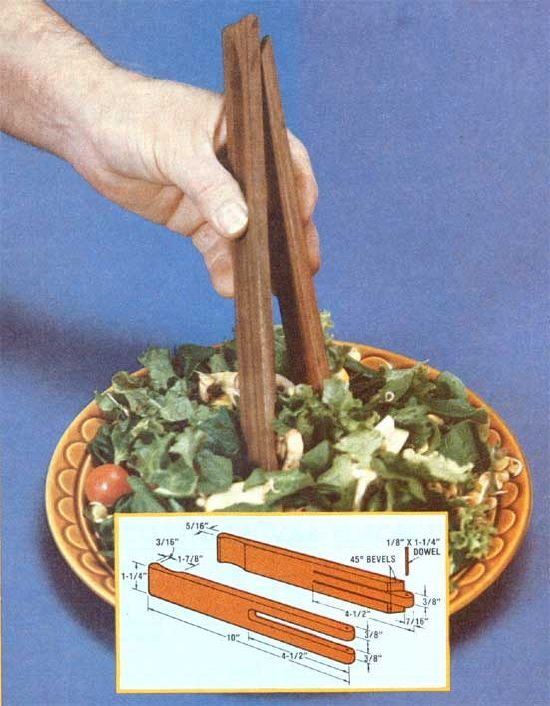

Here’s mini-project for the holiday handyman or –woman…
Findin' a pair of wooden food tongs can -in this day and age-be about like look-in' for a needle in a haystack . . . and, if you are fortunate enough to locate a "timber" utensil, its quality will often leave a lot to be desired.
That's why Emerson Smyers (one of MOTHER'S research department helpers) worked up this dandy little tool for his personal kitchen. He began by cutting and planing two 10" pieces of black walnut to 1-1/4" wide and 5/16" thick. Then Emerson set his table saw to cut 1/8" deep (such a setting-on that particular saw-leaves a 1-7/8"-long section of the blade showing above the table top), positioned a stop at a point 3/16" in front of the blade, and carefully pushed each length of wood flat and sideways across the arc of the blade to shape the cupped tong tips. (If you don't have a table saw, a carefully wielded coping saw or round file will accomplish this same task.)
With the tool's "business end" prepared, MOM'S helper cut a 3/8" X 4-1/2" slot out of one of the walnut pieces, and made two 4-1/2" cuts-3/8" apart-in the other piece ... using a fine coping saw. He then sawed two 45° bevels, beginning 7/16" from the uncupped end of the male side of the tongs as shown.
The rest was simple . . . Emerson merely rounded the ends on both pieces of wood, drilled a 1/8" hole squarely through both the male and female parts of the hinge (about 3/16" from the end), and drove a 1/8" dowel through all three holes. After trimming the dowel, he sanded the walnut smooth with extra-fine paper, and left the wood's surface in its natural state ... without any finish.
As far as Emerson is concerned-and his opinion is shared by a whole lot of MOTHER-type folks-metal utensils have no place in the preparation of many kinds of food ... whether it be stewed fruit, pickled cucumbers, or just plain tossed salad. And any task that demands nonmetallic nippers-from rescuing toast from an electric oven to lifting photo prints out of solution-is a snap for these wooden wonders.
|
 |
|
|